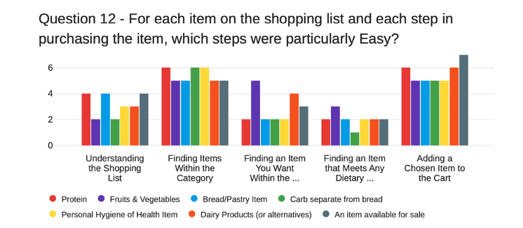

The task of the assignment was to evaluate the SaveOnFoods online shopping website's interface. For this evaluation, we focused on the human need of wanting to shop for groceries on a budget, and the need for shopping given dietary restrictions. We set appropriate evaluation goals that looked at how easy it is to find deals on the saveonfoods website, and how easy it is to shop given dietary restrictions.
Our evaluation method was a study with 7 participants. In this study, participants would first answer a short survey asking questions about their dietary restrictions, budget, and shopping habits. The next part of the study involved using the SaveOnFoods Website. We created a shopping list for the participants to use to shop at the SaveOnFoods wesite. Once they finished shopping, the participants answered another survey asking about their shopping experience, and how easy/difficult certain aspects of the shopping experience were.
Key findings-

The image above is the result from one of the questions from the survey. It shows the number of participants that felt a task was easy.
On the x-axis, there are tasks that the users performed as part of shopping online.
a. Understanding the shopping list.
b.Finding items within the category.
c. Finding an item you want within the category.
d. Finding an item that meets any dietary needs.
e. Adding a chosen item to the cart.
We found that it was fairly easy for users to add items to the cart, find items on sale, and find items within categories.
The image above is the result from another question from the survey. It shows the number of participants that felt a task was hard.
We found that it was sometimes hard for users to find more specific items they wanted within a category.